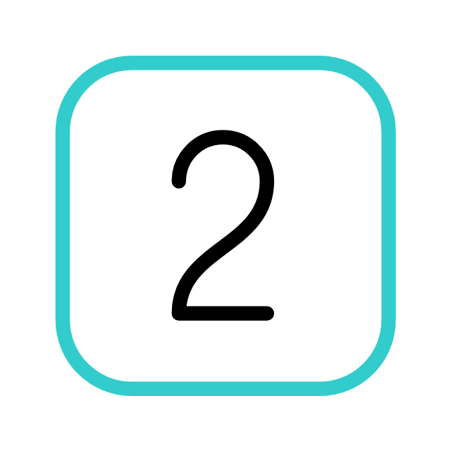
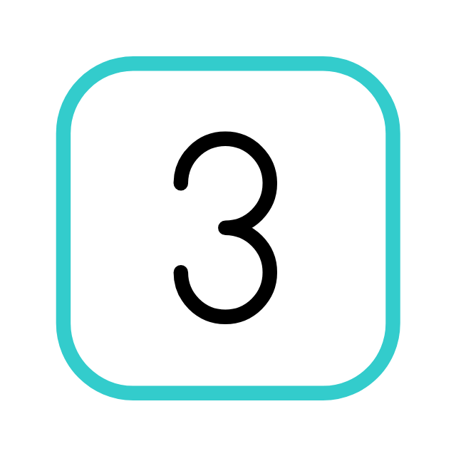

The specialty of general surgery is the largest specialty of the surgical consultant workforce in Sri Lanka. Surgical curriculum given below provides the framework for training for MD in General Surgery and in Special Interest areas for the award of Board Certification in the specialty of general surgery with a special interest, to practice as a consultant in Sri Lanka. The syllabus outlined below describes the core knowledge, clinical judgment, clinical decision making, procedural skills, professional skills and behaviour.
 The aim of the training programme leading to the
award of board certification in the
specialty of General Surgery with a special interest, is to produce a competent surgeon who could safely
manage an unselected surgical emergency by being able to make sound clinical judgment of the most likely
clinical diagnosis, assessment of the severity, appropriate treatment strategy and to identify the
patients
who need referral
The aim of the training programme leading to the
award of board certification in the
specialty of General Surgery with a special interest, is to produce a competent surgeon who could safely
manage an unselected surgical emergency by being able to make sound clinical judgment of the most likely
clinical diagnosis, assessment of the severity, appropriate treatment strategy and to identify the
patients
who need referral
 Patients with a wide range of elective general
surgical conditions
 Patients with a range of conditions in the
selected area of special interest as described below:
- Upper gastrointestinal surgery
- Hepato-pancreato- biliary surgery
- Lower gastrointestinal surgery
- Vascular surgery
- Breast surgery
- Endocrine surgery
- Trauma surgery
Eligibility criteria to sit for the common selection A candidate should:
- Hold a medical degree registered with the Sri Lanka Medical Council
- Complete an internship recognized by the Sri Lanka Medical Council
- Complete one year work experience in Sri Lanka, after internship
- Have 6 months of surgical experience ( Surgery or Obstetrics and Gynaecology) at pre-registration House Officer or Senior House Officer level
- Produce a medical certificate from a consultant physician, indicating general mental and physical fitness and to comply with any other PGIM regulations.
- If a trainee develops a health condition which would compromise his/her ability to train and function as a surgeon, it is his/her responsibility to duly notify in writing of such conditions to the PGIM.
Please refer to the relevant prospectus for the most up to date information. The prospectus of a particular programme contains official information pertaining to a programme approved by the Board of Management, University Senate and the University Grants Commission